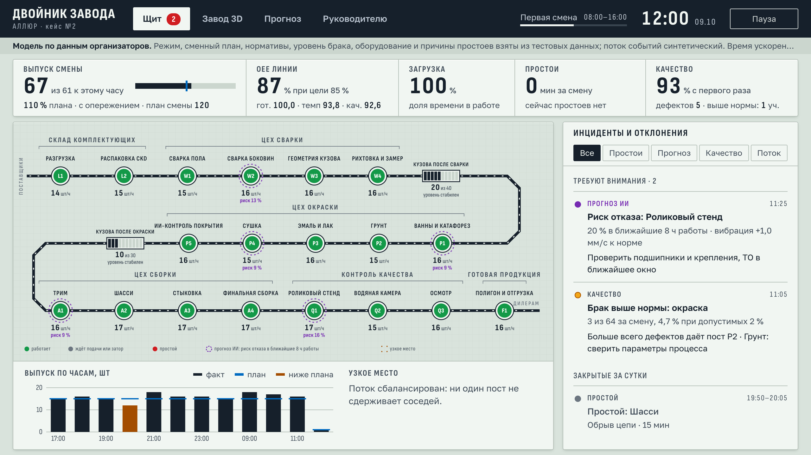
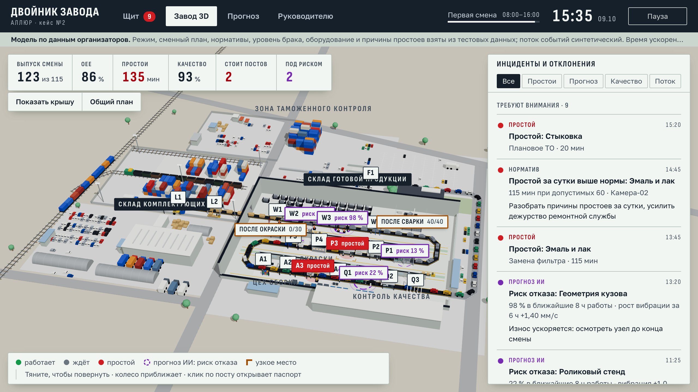
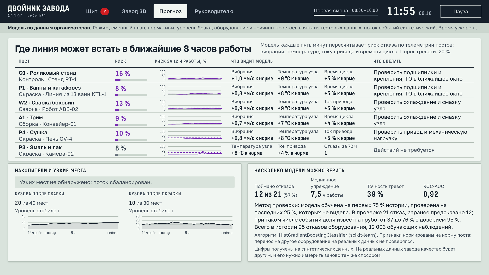
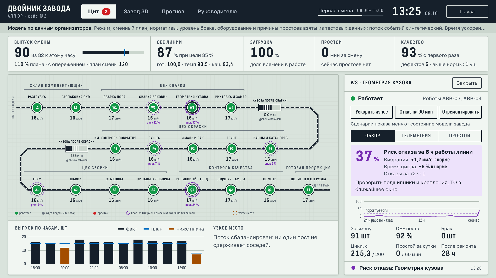
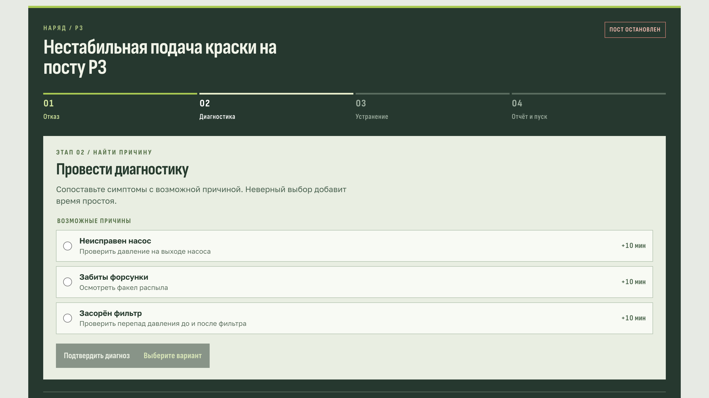
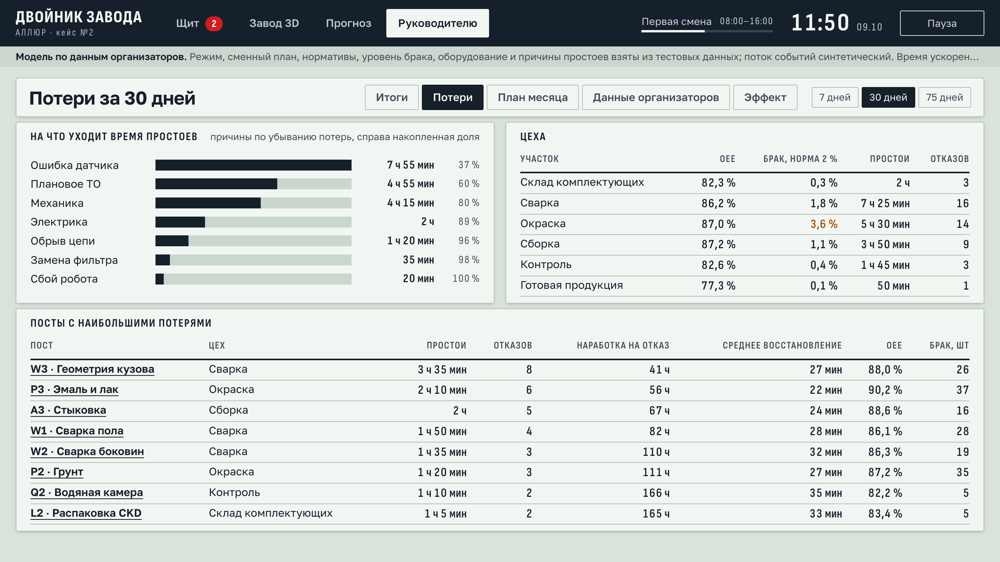
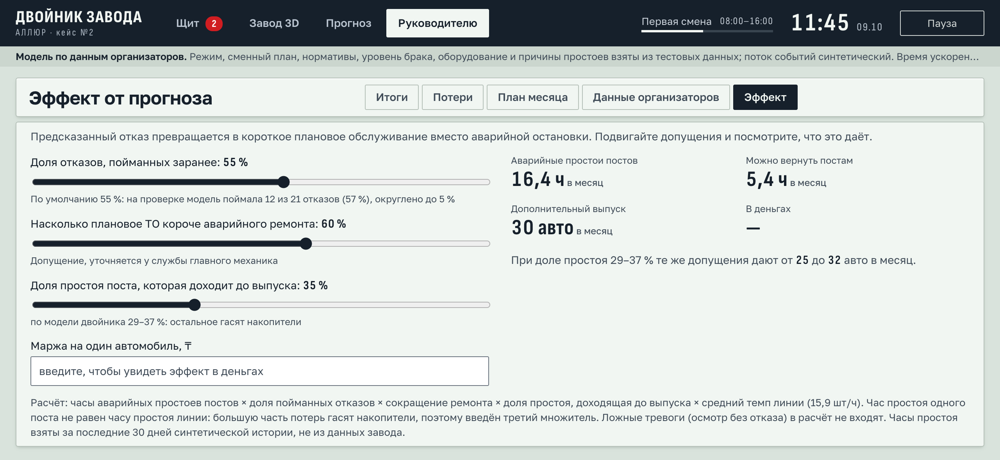

Цифровой двойник автомобильного завода: видит всю линию, предупреждает об отказе заранее, считает потери и эффект
Кейс № 2 · АО «Группа компаний АЛЛЮР»
Qostanai AI Industry Hackathon 2026
Команда Ceres
Шесть участков зависят друг от друга: комплекты, сварка, окраска, сборка, контроль, отгрузка.
Когда один пост встаёт, следующие остаются без кузовов, а предыдущим некуда их отдавать.
Состояние всех участков трудно отслеживать в реальном времени. Решения запаздывают, риски не прогнозируются.
Задача кейса: двойник, который показывает процессы и ключевые показатели в режиме, близком к реальному времени.
| Требование кейса | Где в прототипе |
|---|---|
| Визуализация участков и оборудования | «Щит»: мнемосхема из 19 постов. «Завод 3D»: площадка и оборудование в объёме |
| Мониторинг ключевых показателей | Выпуск к плану, OEE, загрузка, простои и качество за смену |
| Инциденты и отклонения | Лента инцидентов и паспорт поста с телеметрией |
| Панель для руководителей | «Руководителю»: итоги, потери, план месяца, расчёт эффекта |
| Прогноз простоев и узких мест с ИИ | «Прогноз»: риск отказа каждого поста на 8 часов, узкое место, накопители |
Последовательность взята из открытых источников о заводе. В двойнике она сведена к 19 постам в шести цехах, времена цикла и показатели условные.
19 постов в шести цехах и два накопителя кузовов. Лампа поста показывает состояние, рамка отмечает узкое место.
Сверху показатели смены: выпуск к плану, OEE, загрузка, простои, качество.
Справа лента инцидентов и отклонений. Клик по посту открывает паспорт с телеметрией.

Площадка построена по спутниковому снимку: главный корпус, контейнерная площадка, стоянки готовых машин.
У каждого поста своё оборудование: сварочные роботы, ванны катафореза, окрасочные камеры, конвейер.
Перед остановившимся постом кузова встают в очередь. Клик по посту подводит к нему камеру.

Риск отказа каждого поста на ближайшие 8 часов работы линии.
У каждого предупреждения есть объяснение: какие сигналы выросли и что сделать бригаде.
Рядом текущее узкое место и прогноз заполнения накопителей.

Градиентный бустинг (scikit-learn). Признаки: отклонение вибрации, температуры, тока привода и времени цикла от нормы поста, их рост за 6 и 24 часа, наработка после ремонта, отказы за 72 часа. Рост сигналов не может снижать риск.
Телеметрия синтетическая, цифры описывают модель двойника, а не реальный завод. От запуска к запуску ROC-AUC 0,85–0,92. В сценарии с ускоренным износом предупреждение пришло раньше отказа в 413 прогонах из 424.

Четыре учебных отказа: датчик робота, фильтр окрасочной камеры, цепь конвейера, камера контроля.
Диспетчер по симптомам выбирает причину и действие для бригады. Ошибка добавляет минуты простоя.
Бригада присылает отчёт, диспетчер принимает работу или возвращает её. Оборудованием двойник не управляет.

Итоги за 7, 30 или 75 дней: план и факт по дням, OEE и его составляющие.
Потери: причины простоев по убыванию, показатели цехов, посты с наибольшими потерями, наработка на отказ.
План месяца: выпуск по моделям и прогноз на конец месяца.

| В файле | В двойнике |
|---|---|
| План 120 за смену, две смены по 8 часов | Темп 15 автомобилей в час, времена цикла постов |
| Простои: оборудование, причина, минуты | Названия оборудования и причин, ремонт около 30 минут |
| Брак по участкам | Уровень брака в сварке, окраске и сборке |
| Нормативы OEE, брака и простоев | Цели на приборах, пороги инцидентов |
| План по моделям | Доли моделей в выпуске, план месяца |
Допущения меняются ползунками. Часы простоев взяты из синтетической истории, а не из данных завода.

Показатели, прогноз и API читают данные только из хранилища. Чтобы подключить реальную линию, меняется один модуль: источник.
Python · FastAPI · scikit-learn · React · TypeScript · three.js
Поток событий синтетический: в тестовых данных два дня по трём линиям и нет телеметрии.
Один пост равен одной единице оборудования.
История хранится в памяти, авторизации и ролей нет.
Подключить реальную линию через шлюз только на чтение: данные приходят в тот же вход, что и симулятор.
Переобучить прогноз на телеметрии завода или длинной истории простоев.
Добавить постоянное хранилище и роли: смена, служба ремонта, руководитель.
Видит всю линию.
Предупреждает об отказе заранее.
Считает потери и эффект.
Команда Ceres